SOF WEEK: Motion Design for Military Events
Executive Summary
This project aimed to modernize the visual identity of SOF Week, an event promoted by the Special Operations Forces Center (CTOE), through the strategic application of branding and motion design techniques. The proposal focused on creating a dynamic and consistent visual identity that functions as a recognizable, coherent, and functional system across multiple contexts.
Using motion design as a structural element of communication, an identifiable visual language was developed, capable of transmitting SOF Week's values with clarity and impact. Animated content, a modular logo, and a visual identity manual were produced to ensure proper brand application across different platforms. The aesthetic was inspired by high-precision visual systems, frequently used in military and technological contexts, ensuring not only its relevance but also its pertinence.
The project addresses the real challenge of communicating effectively within the Portuguese institutional context without compromising tradition, while building a strong, memorable, and replicable digital presence.
Keywords: Branding; Motion Design; Visual Identity; Modernization; Military Event.
Project Development
The project's execution process was detailed from its initial conception to the production of visual and motion design elements. Initially focused on modernizing CTOE's institutional visual identity, the scope was redefined to SOF Week, allowing for greater creative freedom and adaptability of the graphic language.
The Logo: Tradition and Innovation in Balance
The final proposal, named "Action Logo," was developed based on the ideas of centrality, convergence, and strategic vigilance—values associated with Special Operations Forces. Visually, the logo consists of a curvilinear typographic composition with strong graphic weight, incorporating a centralized "+" symbol. This symbol serves multiple semantic functions: representing a precision sight, reinforcing the concept of "convergence of forces" and "international cooperation", and evoking the idea of focus and impact as a strategic hub for knowledge sharing. The bold and minimalist approach ensures clear, impactful communication adaptable to various contexts, and its modular structure allows for effective animation in motion design.
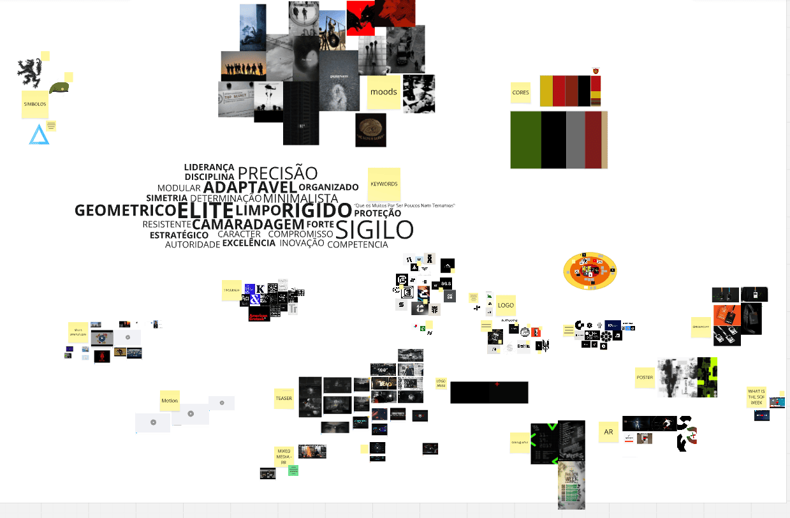
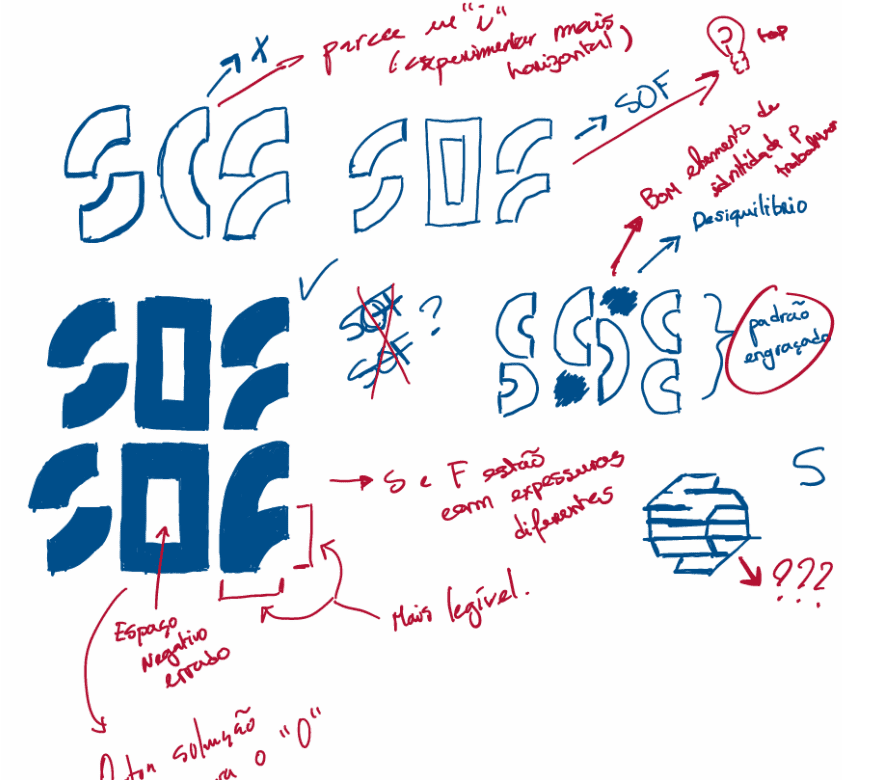
Early visual research and sketching helped define the logo's core concept and explore formal possibilities.
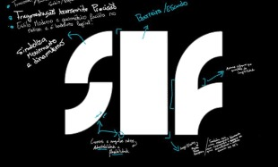
From initial digital mockups to the final, refined logo design, showcasing the evolution.
The SOF WEEK logo in motion, highlighting its modular and dynamic design principles.
Creation of the Visual Identity Manual
A comprehensive Identity Manual was created to ensure the consistency of the SOF Week brand. This document dictates how the brand should be used, from conceptual points like the "+" symbol's role as a pivot to detailed spacing guidelines. Uniquely, for SOF Week, the manual also includes the "motion language", ensuring future video and social media applications maintain consistency with the existing visual system. The manual details logo fundamentals, a precise color palette (primary and secondary colors with CMYK, RGB, Hex, and Pantone codes), and typography using "PUBLIC SANS" for legibility and a robust institutional personality. It also outlines digital presence guidelines, including communication tone and recommended hashtags like #SOFWPT and #AÇÃODEELITE.
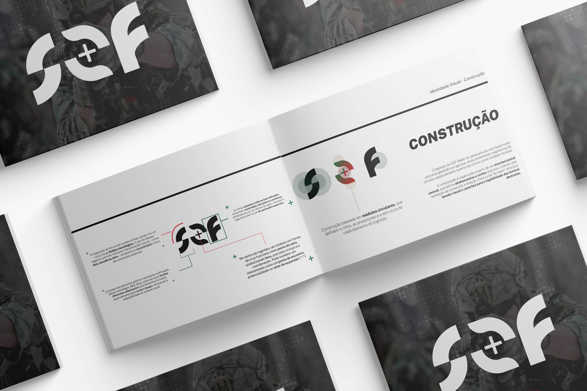
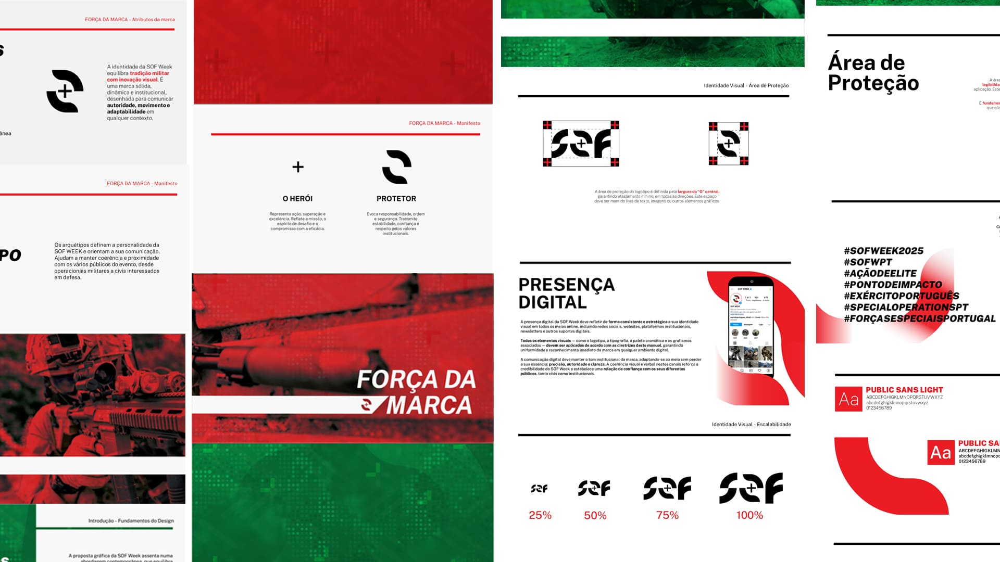
Selected spreads from the comprehensive Visual Identity Manual, ensuring brand consistency across all platforms.
Integration of Motion Design and Interactive Elements
Motion design was conceived as a natural extension of the visual identity. The primary inspiration came from military interfaces, cinematatics, trailers, and game advertisements like *Call of Duty*, featuring dynamic HUDs, visual military codes, and high-precision technological animations. This built a recognizable visual grammar—using terminal typography, vector lines, glitches, and radar elements—to create an impactful and coherent motion branding identity associated with special operations. The language was carefully adapted to reinterpret the "operating system" feel, creating a sense of efficiency, modernity, and tactical coordination, avoiding overly fictional styles. Clear rules for consistency were established, including *ease out* velocity curves for quick, impactful movements, modular construction from the "+" symbol (where elements are built from outlines then filled), and frequent use of "glitch" and "scan lines" effects to simulate transmission failures. Graphic elements maintain rounded corners, tactical grids serve as backgrounds, and typographic animations are key to the style.
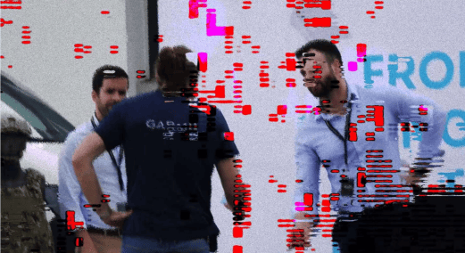
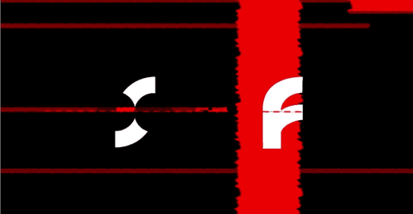
Demonstrating the core motion language, including glitches and animated typography elements.
Animated Separators
Animated separators were a crucial component for the SOF Week event, serving as more than just visual breaks. They mark transitions between topics, indicate pauses (like coffee and lunch breaks), and communicate important information concisely. By being animated, these separators reinforce the brand's motion language, conveying the modernity of SOF Week and consistently applying design principles like kinetic typography and tactical aesthetics. They ensure the visual identity extends throughout the participant's experience, maintaining brand coherence and subtly reinforcing the institutional message.
Examples of animated separators used during the event, enhancing transitions and audience engagement.
Interactive Interfaces with Processing
Two specific user interfaces (UIs) were developed in Processing for the SOF WEEK trailer. The primary goal of these interfaces was to enhance the military-technological aesthetic, creating a more immersive narrative experience without requiring manual animation of the entire UI. This approach provided an efficient workflow. The UIs were designed as modular elements for integration as "overlays" in post-production, simulating real military command and control systems. One interface, "Operations Feed," simulated a military operations loading and monitoring system, using a limited black and red color palette and progressive text decryption with particle animations and subtle glitches. The second, "Activity Log," simulated a real-time monitoring system for operational activities, automatically generating contextualized messages with timestamps and Lamego coordinates, creating an infinite scroll loop. Both interfaces were conceived as visual narrative elements, establishing an implicit narrative of ongoing military operations.
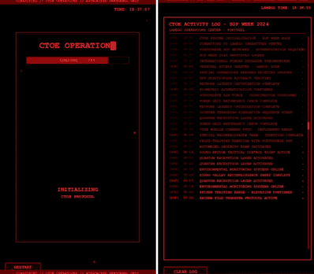
Interactive interfaces built with Processing to enhance the tactical aesthetic and narrative.
Campaign for Social Media
The digital campaign was a core pillar of the project, designed to be realistic, efficient, and aligned with SOF Week's values. A dedicated Instagram account was created for the event, allowing for greater creative freedom and flexibility compared to using existing military profiles. The strategy focused on vertical multimedia content (9:16) optimized for Instagram Reels and Stories, ensuring visual uniformity through the defined motion language. The communication was structured in three phases: hype, information, and presence, each with a narrative portraying participants as "soldiers on a mission".
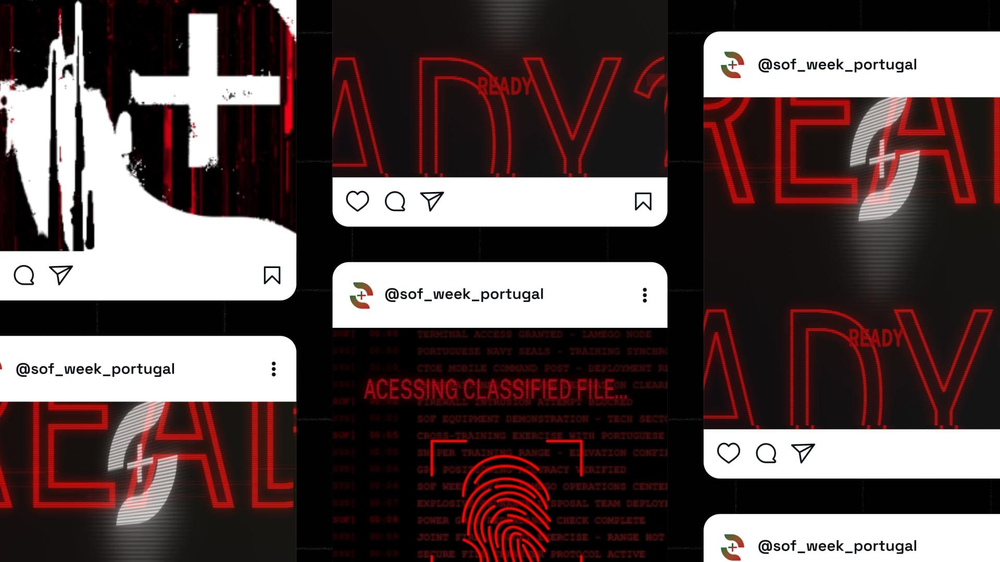
The dedicated Instagram profile showcasing the cohesive visual campaign elements.
Reels: Teaser and Launch Animations
The campaign kicked off with a visual teaser, "Missão Classificada" (Classified Mission), designed to quickly convey key information and hook new audiences with a narrative of special missions and secrecy. This was followed by a launch video, which further integrated the secretive narrative, introducing users to a simulated login process and biometric security before revealing event details.
Animated teasers and launch videos designed to build hype and integrate the mission narrative.
Countdown Animations for Social Media
A system of seven animated countdown videos was developed for social media, published daily in the week leading up to the event. Each video maintained the established visual aesthetic, featuring a dynamic red code background and a modular construction of the numbers. A "> days left" message with a progressive typing effect simulated a military terminal, concluding with an intense glitch effect for seamless looping.
Seamlessly looping countdown animations to build anticipation for SOF WEEK.
Extension of an Extra Day
An unforeseen extension of the event by an extra day necessitated a specific reel to communicate the change. This 2D animated reel, using kinetic typography and glitch effects, transformed the original date (27) into the new one (28) with a visual rotation, accompanied by a commander's radio message. This helped frame the change positively within the existing narrative.
A dynamic animation addressing an unexpected event extension, maintaining brand consistency.
Visual Elements Gallery (Additional)
Here's a collection of additional graphic and animated elements developed for the SOF WEEK project:
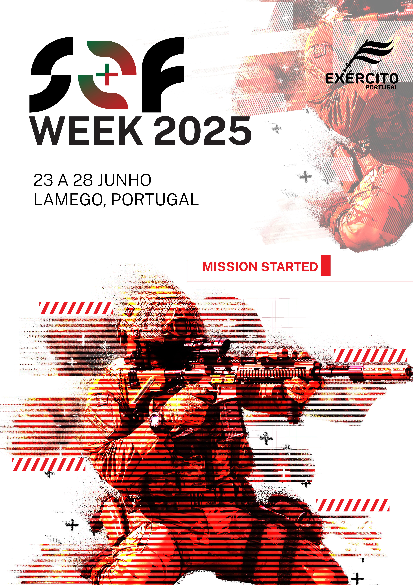
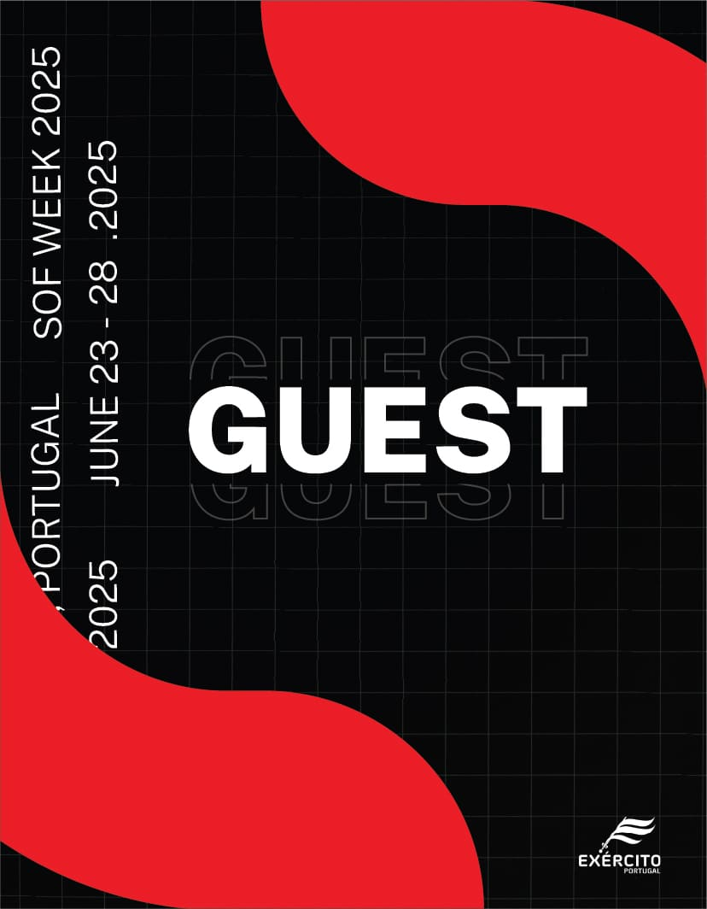
.")
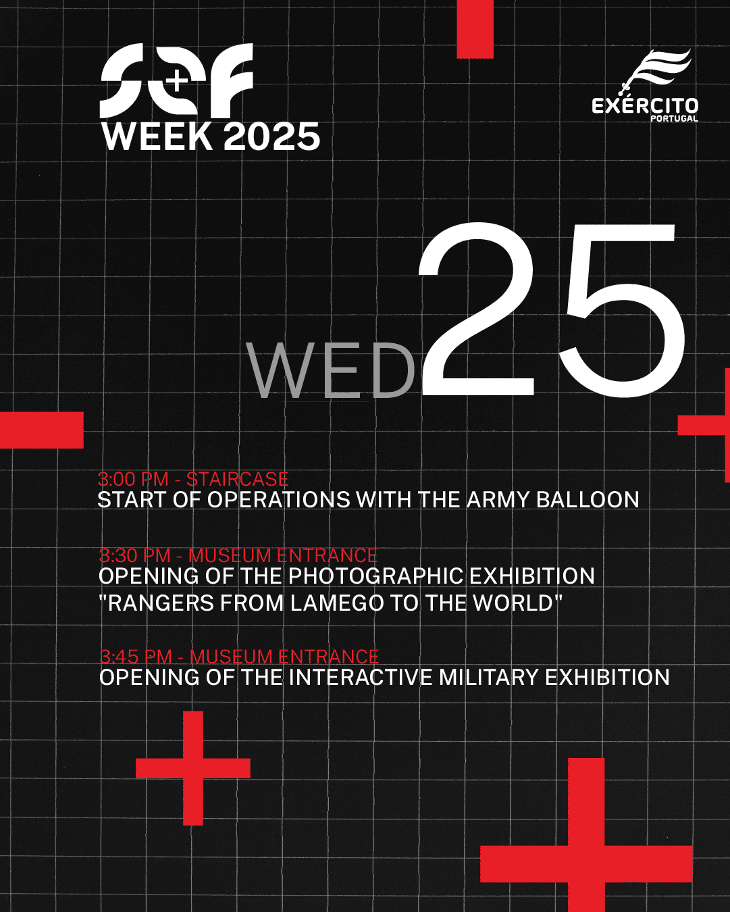
.")

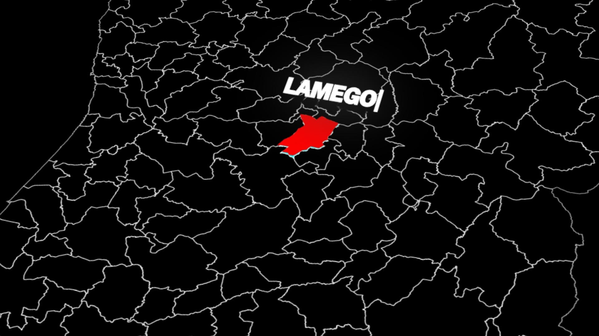
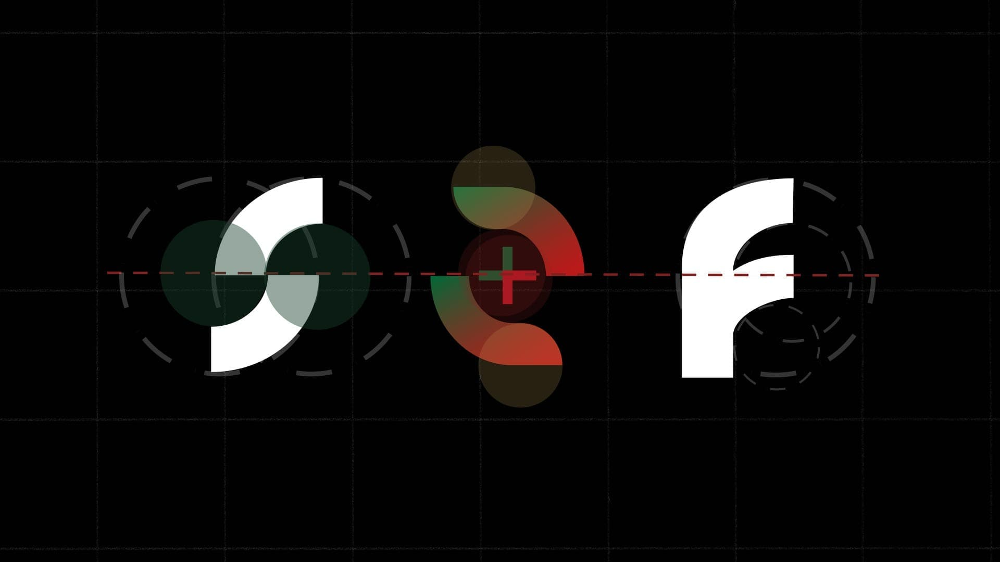
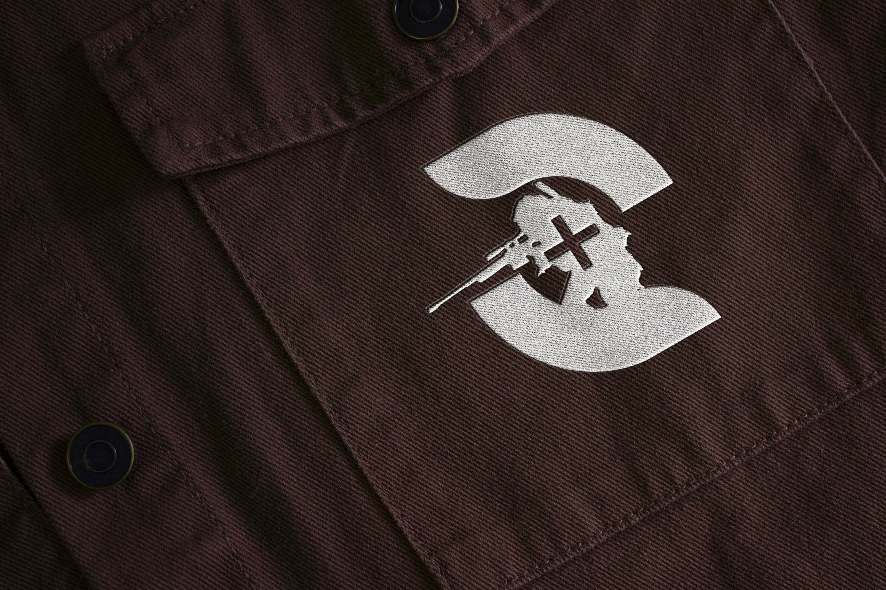
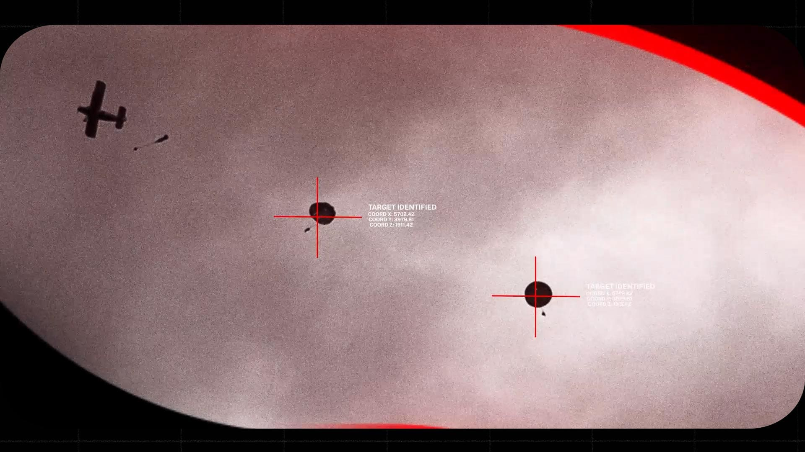
Project Conclusion
This project presented a concrete opportunity to apply motion design and branding skills in a real institutional context, with all its inherent demands and unforeseen events. Collaboration with the Special Operations Forces Center (CTOE) was a central aspect, introducing a dynamic of validation and hierarchy distinct from typical academic projects.
Challenges included multiple approval instances, last-minute changes, and tight deadlines. Despite these obstacles, the project facilitated the development of essential skills such as adapting to unfamiliar audiences, communicating in an institutional environment, managing pressure, and maintaining flexibility in the face of unforeseen circumstances.
Regarding future perspectives, there is always room for improvement and the addition of new elements, such as an AR Poster or a documentary about CTOE missions. The project established a valuable relationship with the entity, and the created identity can be further developed in future editions.